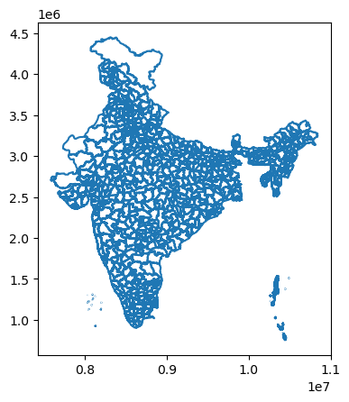
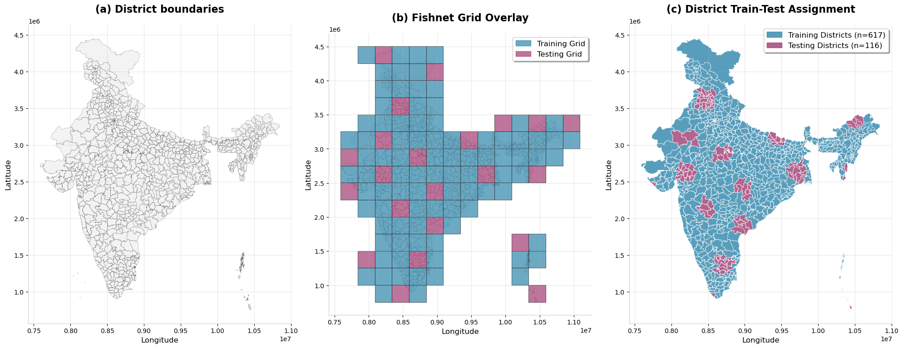

# import required libraries
import sklearn
import geopandas as gpd
import pandas as pdSpatial splitting for ML model
%%time
# read the data
main_df = pd.read_csv('full_extract_ntl_temp_sentiment.csv')
embeddings_df = pd.read_csv('merged_embstats_full_extract_main.csv')
# remove duplicates
size = main_df.shape[0]
main_df = main_df.drop_duplicates(subset=['caseid'], keep='first')
print(f'{size-main_df.shape[0]} duplicates found in main_df. Removed!')
# join embeddings with the main data
main_df = main_df.merge(embeddings_df, on='caseid', how='left')
print(f'Size of dataframe after merging embeddings: {result_df.shape[0]}')
main_df.head()2034 duplicates found in main_df. Removed!
Size of dataframe after merging embeddings: 11423
CPU times: user 1.18 s, sys: 280 ms, total: 1.46 s
Wall time: 1.47 s| caseid | weight_x | wave_x | state_x | district_x | urban_x | gender_x | age_x | caste_x | n7dy23_recode_x | ... | A62_count | A63_p2 | A63_p90 | A63_p95 | A63_p98 | A63_sum | A63_mean | A63_min | A63_max | A63_count | |
|---|---|---|---|---|---|---|---|---|---|---|---|---|---|---|---|---|---|---|---|---|---|
| 0 | 10001 | 0.840547 | 2024 | NE | East Khasi Hills | Urban | Male | 18-29 | Scheduled Castes/Tribes | 1 | ... | 3519450 | -0.124567 | 0.103406 | 0.124567 | 0.147697 | 43582.604336 | 0.012406 | -0.267958 | 0.327812 | 3519450 |
| 1 | 10002 | 1.360886 | 2024 | UT | Leh | Rural | Female | 45+ | Scheduled Castes/Tribes | 1 | ... | 4837249 | -0.206936 | 0.093564 | 0.141730 | 0.267958 | -117536.992772 | -0.024344 | -0.318893 | 0.346021 | 4837249 |
| 2 | 10002 | 1.360886 | 2024 | UT | Leh | Rural | Female | 45+ | Scheduled Castes/Tribes | 1 | ... | 6508506 | -0.221453 | 0.103406 | 0.130165 | 0.160000 | -248714.921995 | -0.038288 | -0.327812 | 0.318893 | 6508506 |
| 3 | 10003 | 0.640417 | 2024 | UT | Daman & Diu | Rural | Male | 30-44 | Other Castes | 1 | ... | 86148 | 0.032541 | 0.221453 | 0.236463 | 0.244152 | 10633.937208 | 0.124858 | -0.051734 | 0.355309 | 86148 |
| 4 | 10003 | 0.640417 | 2024 | UT | Daman & Diu | Rural | Male | 30-44 | Other Castes | 1 | ... | 47012 | -0.022207 | 0.206936 | 0.244152 | 0.259900 | 4060.501217 | 0.087937 | -0.113741 | 0.355309 | 47012 |
5 rows × 617 columns
%%time
import geopandas as gpd
# read the districts shapefile
dist_gdf = gpd.read_file('India_District_2023_3857.gpkg')
dist_gdf.boundary.plot()CPU times: user 2.08 s, sys: 200 ms, total: 2.28 s
Wall time: 2.12 s
%%time
import geopandas as gpd
import numpy as np
from shapely.geometry import Polygon
import pandas as pd
# Fast fishnet creation
def create_fishnet(gdf, cell_size):
minx, miny, maxx, maxy = gdf.total_bounds
x_coords = np.arange(minx, maxx + cell_size, cell_size)
y_coords = np.arange(miny, maxy + cell_size, cell_size)
xx, yy = np.meshgrid(x_coords[:-1], y_coords[:-1])
grid_cells = [Polygon([(x, y), (x + cell_size, y), (x + cell_size, y + cell_size), (x, y + cell_size)])
for x, y in zip(xx.flatten(), yy.flatten())]
return gpd.GeoDataFrame({'grid_id': range(len(grid_cells)), 'geometry': grid_cells}, crs=gdf.crs)
# No-adjacent test split
def no_adjacent_split(gdf, test_size=0.2, random_state=42):
np.random.seed(random_state)
gdf = gdf.reset_index(drop=True)
n_test = int(len(gdf) * test_size)
# Build adjacency using spatial index (faster)
sindex = gdf.sindex
adjacency = {}
for idx, geom in enumerate(gdf.geometry):
possible_matches = list(sindex.intersection(geom.bounds))
neighbors = [i for i in possible_matches if i != idx and gdf.geometry.iloc[i].touches(geom)]
adjacency[idx] = neighbors
# Greedy selection
available = set(range(len(gdf)))
test_indices = []
while len(test_indices) < n_test and available:
candidate = np.random.choice(list(available))
test_indices.append(candidate)
# Remove candidate and neighbors
to_remove = {candidate} | set(adjacency.get(candidate, []))
available -= to_remove
train_indices = [i for i in range(len(gdf)) if i not in test_indices]
return gdf.loc[train_indices], gdf.loc[test_indices]
# Fixed district assignment
def assign_districts(districts, train_grid, test_grid):
districts = districts.reset_index(drop=True).copy()
districts['orig_idx'] = districts.index
districts['train_area'] = 0.0
districts['test_area'] = 0.0
# Calculate overlaps with proper index handling
for split_type, grid in [('train', train_grid), ('test', test_grid)]:
overlay = gpd.overlay(districts, grid, how='intersection')
if not overlay.empty:
# Group by original district index and sum areas
area_sums = overlay.groupby('orig_idx')['geometry'].apply(lambda x: x.area.sum())
# Map back to districts using orig_idx
for orig_idx, area in area_sums.items():
districts.loc[districts['orig_idx'] == orig_idx, f'{split_type}_area'] = area
districts['split'] = (districts['train_area'] >= districts['test_area']).map({True: 'train', False: 'test'})
return districts.drop('orig_idx', axis=1)
# Main execution
cell_size = 250000
print("Creating fishnet...")
fishnet = create_fishnet(dist_gdf, cell_size)
fishnet_filtered = fishnet[fishnet.intersects(dist_gdf.unary_union)]
print("Splitting with no-adjacent constraint...")
train_grid, test_grid = no_adjacent_split(fishnet_filtered, test_size=0.2, random_state=55)
print("Assigning districts...")
dist_with_splits = assign_districts(dist_gdf, train_grid, test_grid)
train_districts = dist_with_splits[dist_with_splits['split'] == 'train']
test_districts = dist_with_splits[dist_with_splits['split'] == 'test']
print(f"Results: {len(train_grid)} train grid, {len(test_grid)} test grid")
print(f"Districts: {len(train_districts)} train, {len(test_districts)} test")Creating fishnet...
Splitting with no-adjacent constraint...
Assigning districts...
Results: 89 train grid, 22 test grid
Districts: 617 train, 116 test
CPU times: user 59.9 s, sys: 217 ms, total: 1min
Wall time: 1min%%time
import matplotlib.patches as mpatches
# Set up the figure with publication quality settings
plt.style.use('default')
fig, axes = plt.subplots(1, 3, figsize=(20, 8))
# Define colors
district_color = '#f0f0f0'
district_edge = '#666666'
train_color = '#2E86AB' # Professional blue
test_color = '#A23B72' # Professional red/purple
grid_color = '#333333' # Dark gray for grid lines
# Plot 1: Original districts
dist_gdf.plot(ax=axes[0],
color=district_color,
edgecolor=district_edge,
linewidth=0.3,
alpha=0.8)
axes[0].set_title('(a) District boundaries', fontsize=16, fontweight='bold', pad=20)
axes[0].set_xlabel('Longitude', fontsize=12)
axes[0].set_ylabel('Latitude', fontsize=12)
axes[0].tick_params(labelsize=10)
axes[0].grid(True, alpha=0.3)
# Plot 2: Districts with fishnet overlay
dist_gdf.plot(ax=axes[1],
color=district_color,
edgecolor=district_edge,
linewidth=0.3,
alpha=0.6)
train_grid.plot(ax=axes[1],
facecolor=train_color,
edgecolor=grid_color,
linewidth=0.8,
alpha=0.7)
test_grid.plot(ax=axes[1],
facecolor=test_color,
edgecolor=grid_color,
linewidth=0.8,
alpha=0.7)
# Create manual legend for plot 2
train_patch = mpatches.Patch(color=train_color, alpha=0.7, label='Training Grid')
test_patch = mpatches.Patch(color=test_color, alpha=0.7, label='Testing Grid')
axes[1].legend(handles=[train_patch, test_patch], fontsize=12, loc='upper right',
frameon=True, fancybox=True, shadow=True)
axes[1].set_title('(b) Fishnet Grid Overlay', fontsize=16, fontweight='bold', pad=20)
axes[1].set_xlabel('Longitude', fontsize=12)
axes[1].set_ylabel('Latitude', fontsize=12)
axes[1].tick_params(labelsize=10)
axes[1].grid(True, alpha=0.3)
# Plot 3: Districts colored by train/test assignment
train_districts.plot(ax=axes[2],
color=train_color,
edgecolor='white',
linewidth=0.5,
alpha=0.8)
test_districts.plot(ax=axes[2],
color=test_color,
edgecolor='white',
linewidth=0.5,
alpha=0.8)
# Create manual legend for plot 3
train_district_patch = mpatches.Patch(color=train_color, alpha=0.8,
label=f'Training Districts (n={len(train_districts)})')
test_district_patch = mpatches.Patch(color=test_color, alpha=0.8,
label=f'Testing Districts (n={len(test_districts)})')
axes[2].legend(handles=[train_district_patch, test_district_patch], fontsize=12,
loc='upper right', frameon=True, fancybox=True, shadow=True)
axes[2].set_title('(c) District Train-Test Assignment', fontsize=16, fontweight='bold', pad=20)
axes[2].set_xlabel('Longitude', fontsize=12)
axes[2].set_ylabel('Latitude', fontsize=12)
axes[2].tick_params(labelsize=10)
axes[2].grid(True, alpha=0.3)
# Set equal aspect ratio for all subplots
for ax in axes:
ax.set_aspect('equal')
ax.spines['top'].set_visible(False)
ax.spines['right'].set_visible(False)
ax.spines['bottom'].set_color('#CCCCCC')
ax.spines['left'].set_color('#CCCCCC')
# Adjust layout
plt.tight_layout()
plt.subplots_adjust(top=0.9)
plt.show()
# Save high-quality figure
fig.savefig('spatial_train_test_split.png', dpi=300, bbox_inches='tight',
facecolor='white', edgecolor='none')
CPU times: user 23.6 s, sys: 652 ms, total: 24.2 s
Wall time: 23.7 sdist_with_splits| state23 | st_code | dist23 | di_code | st_di23 | Shape_Leng | Shape_Area | GeoName | GEOID | geometry | train_area | test_area | split | |
|---|---|---|---|---|---|---|---|---|---|---|---|---|---|
| 0 | GUJARAT | 24 | MORBI | 673 | GUJARAT, MORBI | 539476.764723 | 4.791280e+09 | GUJARAT, MORBI | x24673 | MULTIPOLYGON (((7916729.974 2657739.258, 79167... | 5.892261e+09 | 0.000000e+00 | train |
| 1 | GUJARAT | 24 | AHMADABAD | 438 | GUJARAT, AHMADABAD | 857254.094647 | 6.966374e+09 | GUJARAT, AHMADABAD | x24438 | MULTIPOLYGON (((8011013.674 2638096.527, 80107... | 8.188204e+09 | 3.688279e+08 | train |
| 2 | GUJARAT | 24 | ANAND | 440 | GUJARAT, ANAND | 393046.690523 | 3.054307e+09 | GUJARAT, ANAND | x24440 | MULTIPOLYGON (((8129232.514 2599976.400, 81293... | 1.429556e+09 | 2.303346e+09 | test |
| 3 | GUJARAT | 24 | DEVBHUMI DWARKA | 674 | GUJARAT, DEVBHUMI DWARKA | 661732.986530 | 4.002784e+09 | GUJARAT, DEVBHUMI DWARKA | x24674 | MULTIPOLYGON (((7718827.698 2557929.563, 77188... | 4.242252e+09 | 6.274325e+08 | train |
| 4 | GUJARAT | 24 | JAMNAGAR | 447 | GUJARAT, JAMNAGAR | 737428.071884 | 5.694271e+09 | GUJARAT, JAMNAGAR | x24447 | MULTIPOLYGON (((7852087.684 2560524.569, 78520... | 6.407889e+09 | 5.365635e+08 | train |
| ... | ... | ... | ... | ... | ... | ... | ... | ... | ... | ... | ... | ... | ... |
| 728 | ASSAM | 18 | SONITPUR | 301 | ASSAM, SONITPUR | 302021.098402 | 3.318736e+09 | ASSAM, SONITPUR | x18301 | MULTIPOLYGON (((10326354.727 3126884.632, 1032... | 3.784846e+09 | 0.000000e+00 | train |
| 729 | ASSAM | 18 | SOUTH SALMARA MANCACHAR | 707 | ASSAM, SOUTH SALMARA MANCACHAR | 234231.827116 | 6.578689e+08 | ASSAM, SOUTH SALMARA MANCACHAR | x18707 | MULTIPOLYGON (((10026361.681 2997346.466, 1002... | 6.946624e+08 | 0.000000e+00 | train |
| 730 | ASSAM | 18 | TINSUKIA | 302 | ASSAM, TINSUKIA | 419712.540770 | 3.677172e+09 | ASSAM, TINSUKIA | x18302 | MULTIPOLYGON (((10683315.573 3243887.278, 1068... | 4.870746e+09 | 0.000000e+00 | train |
| 731 | ASSAM | 18 | UDALGURI | 617 | ASSAM, UDALGURI | 363765.338478 | 1.977228e+09 | ASSAM, UDALGURI | x18617 | MULTIPOLYGON (((10280044.090 3110745.402, 1028... | 2.535762e+09 | 0.000000e+00 | train |
| 732 | ASSAM | 18 | WEST KARBI ANGLONG | 710 | ASSAM, WEST KARBI ANGLONG | 430785.104037 | 2.957340e+09 | ASSAM, WEST KARBI ANGLONG | x18710 | MULTIPOLYGON (((10299580.450 3017866.006, 1029... | 3.810255e+09 | 0.000000e+00 | train |
733 rows × 13 columns
## add the train test information to the main_df
main_df['district_shapefile_code_x'] = main_df['district_shapefile_code_x'].astype(int)
dist_with_splits['di_code'] = pd.to_numeric(dist_with_splits['di_code'], errors='coerce').astype('Int64')
final_df = main_df.merge(dist_with_splits[['di_code', 'split']],
left_on='district_shapefile_code_x',
right_on='di_code',
how='left').drop('di_code', axis=1)final_df.to_csv('250807_FinalCleanedData_PT.csv')